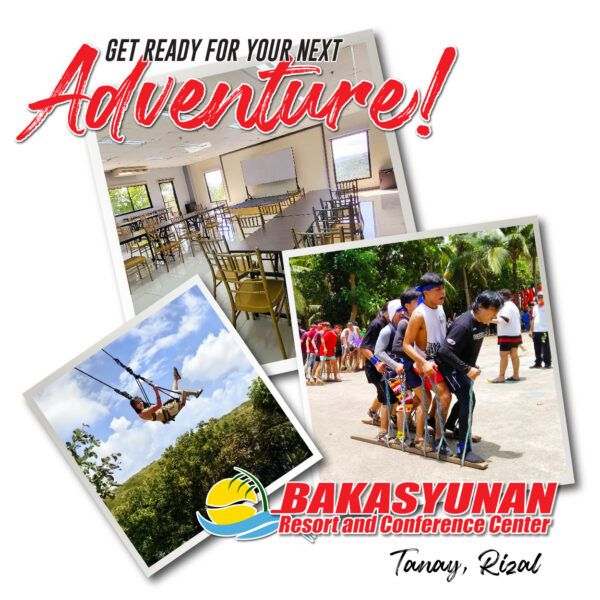

1. Bakasyunan Resort Tanay
Welcome to Bakasyunan Resort and Conference Center Tanay, Rizal.

Address: Sitio Balimbing, Barangay Plaza Aldea, Sampaloc, Tanay, Rizal, Philippines, 1980
Price: Starts from Php 1,935/night (Private Double - 1 Queen Bed)
Nestled in Tanay, Bakasyunan Resort Tanay blends comfort and convenience for your perfect Tanay vacation getaway. This hotel is not only perfect for families but also a great option for those looking for Rizal resorts suitable for company team building. It offers a variety of fun activities, including BBQ time in the garden, team building, and game facilitators, and even provides a perfect way to escape from daily routines.
Although its location is not specifically in Rizal, this resort is always a popular choice, especially for those seeking a place to bond as a team and enjoy the beautiful green scenery of Tanay.

Sitting in the heart of a 15-hectare forest, this unique resort east of Manila crowns the hilly terrain overlooking the spectacular Sierra Madre mountains and Laguna de bay.
Bakasyunan Resort and Conference Center in Tanay, Rizal is the perfect sanctuary for wellness aficionados young and old, executives and their families, couples, tourists – and all those seeking a welcome respite from city life. We offer a plethora of activities and amenities for your enjoyment. Whether you are looking for exciting adventures or just quiet time to reflect, the oceans of green dotted by serene swimming pools and the comfortable, cool climate make Bakasyunan the place to relax and rejuvenate your spirit.